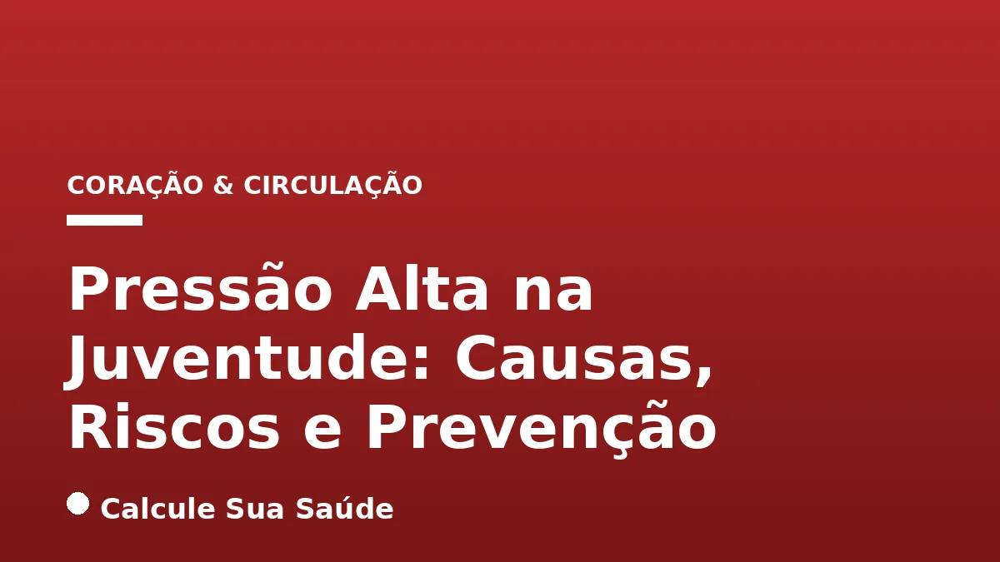

Aviso médico importante
Este conteúdo é educativo e informativo e não substitui a consulta, o diagnóstico ou o tratamento de um profissional de saúde. Em caso de sintomas, procure orientação médica.
Índice do Artigo
- 1. A Hipertensão Arterial na Juventude: Uma Definição Precisa e Seus Conceitos-Chave
- 2. O Cenário Epidemiológico da Hipertensão em Jovens no Brasil e no Mundo
- 3. Causas da Hipertensão em Jovens: Fatores de Risco Modificáveis
- 4. Causas da Hipertensão em Jovens: Fatores Genéticos e Condições Médicas Subjacentes
- 5. Sintomas Silenciosos e Sinais de Alerta para a Hipertensão Pediátrica
- 6. O Diagnóstico Precoce: Aferição Correta da Pressão Arterial
- 7. Confirmação Diagnóstica e Exames Complementares na Hipertensão Juvenil
- 8. Prevenção Primária: O Pilar do Estilo de Vida Saudável
- 9. Estratégias de Prevenção: Manejo do Peso, Estresse e Sono Adequado
- 10. Tratamento da Hipertensão em Crianças e Adolescentes: Abordagens Não Medicamentosas
- 11. Tratamento Farmacológico: Indicações e Opções Baseadas em Evidências
- 12. Mitos Comuns vs. O Que a Ciência Diz sobre Hipertensão na Juventude
- 13. O Papel Crucial da Família e da Escola na Prevenção da Hipertensão Juvenil
- 14. Impacto a Longo Prazo da Hipertensão Precoce: Riscos e Complicações Futuras
- 15. Conclusão: Um Chamado à Ação para a Saúde Cardiovascular dos Jovens
- 16. Perguntas frequentes
A Hipertensão Arterial Sistêmica (HAS), popularmente conhecida como pressão alta, deixou de ser uma preocupação exclusiva da vida adulta para se tornar uma condição cada vez mais prevalente e alarmante entre crianças e adolescentes. Este fenômeno, impulsionado por mudanças significativas no estilo de vida global, representa um desafio substancial para a saúde pública e um risco considerável para o desenvolvimento cardiovascular a longo prazo dos jovens. Compreender suas nuances, desde a definição diagnóstica até as estratégias de prevenção e tratamento, é crucial para mitigar seus impactos.
A detecção precoce da hipertensão na juventude é um pilar fundamental para evitar complicações graves na vida adulta, como doenças cardíacas, acidentes vasculares cerebrais e insuficiência renal. Contudo, o caráter muitas vezes assintomático da doença torna o diagnóstico um desafio, exigindo vigilância constante por parte de pais, cuidadores e profissionais de saúde. A elevação persistente da pressão arterial em idades precoces não é um mero indicador, mas um fator preditor robusto de morbidade e mortalidade cardiovascular futura.
Neste artigo aprofundado, o Calcule Sua Saúde se propõe a desvendar os múltiplos aspectos da pressão alta na juventude, explorando suas causas multifatoriais, os riscos associados, os métodos diagnósticos precisos e as abordagens de prevenção e tratamento baseadas nas mais recentes evidências científicas. Nosso objetivo é fornecer informações claras e embasadas para capacitar famílias e profissionais na proteção da saúde cardiovascular de nossas futuras gerações.
Em resumo
- A hipertensão em jovens é definida por valores de PA iguais ou superiores ao percentil 95 para idade, sexo e altura, aferidos em três ocasiões distintas.
- Obesidade e sobrepeso são os principais fatores de risco modificáveis, impulsionando o aumento da prevalência da HAS nessa faixa etária.
- A doença é frequentemente assintomática, o que ressalta a importância da aferição regular da pressão arterial em todas as crianças maiores de 3 anos.
- A prevenção precoce foca em um estilo de vida saudável: dieta balanceada (como a DASH), atividade física diária, controle de peso e manejo do estresse.
- O tratamento inicial da HAS em jovens prioriza mudanças no estilo de vida; a intervenção medicamentosa é reservada para casos específicos e mais graves.
- A prevalência de hipertensão em adolescentes brasileiros é de 9,6%, com a obesidade sendo um fator atribuível significativo, correspondendo a cerca de 1/5 dos casos.
1. A Hipertensão Arterial na Juventude: Uma Definição Precisa e Seus Conceitos-Chave
A Hipertensão Arterial Sistêmica (HAS), comumente referida como pressão alta, é uma condição crônica caracterizada pela elevação persistente dos níveis de pressão sanguínea nas artérias. Embora tradicionalmente associada à população adulta, a incidência de HAS em crianças e adolescentes tem apresentado um crescimento preocupante nas últimas décadas. A compreensão de sua definição e dos critérios diagnósticos específicos para essa faixa etária é fundamental para uma abordagem eficaz e precoce.
Diferentemente dos adultos, onde valores fixos como 140/90 mmHg são amplamente utilizados para o diagnóstico, a hipertensão em crianças e adolescentes é definida por valores de Pressão Arterial (PA) Sistólica (PAS) e/ou Diastólica (PAD) que são iguais ou superiores ao percentil 95 para idade, sexo e percentil de altura. Essa aferição deve ser confirmada em três ou mais ocasiões diferentes para estabelecer o diagnóstico. Essa abordagem percentílica reflete a variação natural da pressão arterial durante o crescimento e desenvolvimento.
A pré-hipertensão, ou pressão arterial elevada, é um estágio intermediário que merece atenção. Ela é diagnosticada quando os valores de PA se situam entre o percentil 90 e o percentil 95. Para adolescentes a partir dos 13 anos, uma PA igual ou superior a 120/80 mmHg e inferior ao percentil 95 também é classificada como pressão arterial elevada. Em adultos, a pressão é considerada normal quando consistentemente abaixo de 120/80 mmHg. A identificação desses estágios iniciais é crucial para intervenções preventivas, evitando a progressão para a hipertensão estabelecida.
2. O Cenário Epidemiológico da Hipertensão em Jovens no Brasil e no Mundo
A hipertensão arterial em crianças e adolescentes não é apenas uma preocupação teórica, mas uma realidade epidemiológica com implicações globais e nacionais. Dados recentes indicam um aumento alarmante na prevalência dessa condição, transformando-a em um problema de saúde pública que exige atenção urgente. Globalmente, a incidência de hipertensão arterial entre crianças e adolescentes de até 19 anos dobrou nos últimos 20 anos, passando de 3% para 6%.
No Brasil, o cenário não é diferente. Estima-se que a prevalência de hipertensão na população pediátrica (até 21 anos) varie de 3% a 15%, dependendo da região e da metodologia de estudo. Especificamente em crianças brasileiras de até seis anos, a prevalência de HAS é de 3% a 5%, enquanto a prevalência de pressão arterial elevada (PAE) está entre 10% a 15%. Esses números sublinham a necessidade de vigilância desde os primeiros anos de vida.
Um dos estudos mais relevantes no contexto brasileiro é o Estudo de Riscos Cardiovasculares em Adolescentes (ERICA), o primeiro com representatividade nacional. Avaliando 73.399 estudantes, o ERICA revelou uma prevalência de hipertensão arterial de 9,6% em adolescentes (IC95% 9,0-10,3). As prevalências mais baixas foram observadas nas regiões Norte (8,4%) e Nordeste (8,4%), enquanto a região Sul apresentou a taxa mais alta (12,5%). O estudo também apontou que a prevalência de hipertensão e obesidade foi maior no sexo masculino, e que adolescentes com obesidade apresentaram uma prevalência de hipertensão significativamente mais elevada (28,4%) em comparação com aqueles com sobrepeso (15,4%) ou eutróficos (6,3%). A fração de hipertensão atribuível à obesidade foi de 17,8%, indicando que cerca de um quinto dos hipertensos poderiam não ser se não fossem obesos, reforçando a ligação intrínseca entre peso e pressão arterial.
3. Causas da Hipertensão em Jovens: Fatores de Risco Modificáveis
A hipertensão em jovens é uma condição complexa, raramente atribuível a uma única causa. Sua etiologia é multifatorial, envolvendo uma interação de fatores genéticos, ambientais e de estilo de vida. A identificação desses fatores é crucial para a implementação de estratégias de prevenção e tratamento eficazes.
Obesidade e Sedentarismo: A Epidemia Moderna
A obesidade e o sobrepeso emergem como os principais fatores de risco modificáveis e a causa central do aumento da prevalência de hipertensão nessa faixa etária. O excesso de peso corporal, especialmente a gordura visceral, desencadeia uma série de alterações metabólicas e hormonais que contribuem para a elevação da pressão arterial, incluindo resistência à insulina, disfunção endotelial e ativação do sistema renina-angiotensina-aldosterona. O sedentarismo, frequentemente associado à obesidade, agrava esse quadro, pois a falta de atividade física regular compromete a saúde cardiovascular e o controle do peso.
Estilo de Vida e Hábitos Alimentares
Além da obesidade, o estilo de vida contemporâneo desempenha um papel significativo. Uma dieta rica em sódio, açúcares e alimentos ultraprocessados contribui diretamente para a hipertensão. O consumo excessivo de sódio leva à retenção hídrica e ao aumento do volume sanguíneo, enquanto açúcares e ultraprocessados estão ligados ao ganho de peso e à inflamação sistêmica. O estresse e a ansiedade crônicos, bem como o uso excessivo de telas, também podem influenciar negativamente a pressão arterial, seja por mecanismos diretos ou indiretos, como a perturbação do sono.
4. Causas da Hipertensão em Jovens: Fatores Genéticos e Condições Médicas Subjacentes
Influência Genética e Histórico Familiar
Fatores genéticos também são importantes. Um histórico familiar de hipertensão aumenta significativamente o risco de desenvolvimento da condição em jovens, sugerindo uma predisposição genética que interage com os fatores ambientais. Embora não seja o único determinante, a herança genética pode tornar alguns indivíduos mais vulneráveis aos efeitos de um estilo de vida não saudável.
Condições Médicas Preexistentes
Diversas condições médicas preexistentes podem ser causas secundárias de hipertensão em jovens. Doenças renais, como glomerulonefrites ou malformações renais, são uma das principais. Cardiopatias congênitas, como a coarctação da aorta, alterações hormonais (ex: distúrbios da tireoide ou adrenais), diabetes tipo 1 e tipo 2, e a apneia do sono são outras condições que podem elevar a pressão arterial. Fatores perinatais, como prematuridade e baixo peso ao nascer, também são associados a um risco aumentado. Por fim, o uso indevido de substâncias, como anabolizantes, pode induzir hipertensão grave.
5. Sintomas Silenciosos e Sinais de Alerta para a Hipertensão Pediátrica
A hipertensão arterial é frequentemente referida como uma "doença silenciosa", e essa característica é ainda mais pronunciada em crianças e adolescentes. Na vasta maioria dos casos, a condição é assintomática, o que a torna perigosa, pois o diagnóstico pode ser tardio, permitindo que a doença progrida e cause danos a órgãos-alvo antes mesmo de ser detectada. A ausência de sintomas claros é um dos maiores desafios na gestão da HAS pediátrica.
Quando os sintomas se manifestam, geralmente indicam que a pressão arterial está muito elevada e podem ser inespecíficos, dificultando a associação direta com a hipertensão. É crucial que pais e cuidadores estejam atentos a qualquer alteração no comportamento ou bem-estar da criança ou adolescente. Os sinais a serem observados incluem:
- Dor de cabeça frequente e intensa: Especialmente na região da nuca, pode ser um indicativo de pressão elevada.
- Tontura ou visão embaçada: Podem ocorrer devido à alteração do fluxo sanguíneo cerebral.
- Palpitações ou sensação de coração acelerado: O coração pode estar trabalhando mais para bombear o sangue contra a resistência elevada.
- Cansaço excessivo sem motivo aparente: A fadiga pode ser um sintoma inespecífico de várias condições, incluindo hipertensão.
- Dor no peito: Embora menos comum em jovens, pode indicar sobrecarga cardíaca.
- Sangramento nasal frequente (epistaxe): Pode ser um sinal de fragilidade capilar ou pressão muito alta.
- Irritabilidade e alterações do sono: Podem ser manifestações indiretas do desconforto ou do impacto da hipertensão no sistema nervoso.
Em casos mais avançados ou de hipertensão secundária, podem surgir sinais que sugerem envolvimento de órgãos específicos. Por exemplo, problemas renais podem manifestar-se com hematúria (sangue na urina), edema (inchaço) e fadiga. O envolvimento cardíaco pode levar à dispneia (falta de ar) aos esforços. A presença de qualquer um desses sintomas, mesmo que inespecíficos, deve motivar uma consulta médica e a aferição da pressão arterial.
| Sinais de Alerta para Hipertensão em Jovens | Possível Indicação |
|---|---|
| Dores de cabeça persistentes (nuca) | Pressão arterial elevada |
| Tontura ou visão turva | Alterações no fluxo sanguíneo |
| Palpitações ou taquicardia | Sobrecarga cardíaca |
| Cansaço extremo sem causa | Impacto sistêmico da hipertensão |
| Sangramentos nasais frequentes | Pressão arterial muito alta ou fragilidade capilar |
| Irritabilidade e distúrbios do sono | Efeitos no sistema nervoso central |
| Edema (inchaço) ou hematúria | Possível envolvimento renal |
6. O Diagnóstico Precoce: Aferição Correta da Pressão Arterial
O diagnóstico precoce da hipertensão em crianças e adolescentes é uma ferramenta poderosa para prevenir complicações futuras e garantir uma intervenção oportuna. Dada a natureza assintomática da condição, a aferição regular da pressão arterial é o método mais eficaz para sua detecção.
Quando e Como Aferir a Pressão Arterial
As diretrizes pediátricas recomendam que a aferição da pressão arterial seja realizada em todas as crianças maiores de 3 anos de idade, pelo menos uma vez ao ano, como parte da rotina de consultas pediátricas. Para crianças menores de 3 anos, a avaliação é indicada em situações especiais de risco, tais como prematuridade, baixo peso ao nascer, cardiopatia congênita, doenças renais, transplantes de órgãos sólidos, neoplasias ou uso crônico de medicamentos que podem elevar a PA.
A técnica de medição é crucial para a obtenção de resultados precisos. O manguito utilizado deve ter uma largura correspondente a 40% da circunferência do braço e um comprimento que envolva de 80% a 100% da circunferência. Um manguito inadequado pode levar a leituras errôneas, subestimando ou superestimando a pressão. A criança ou adolescente deve estar em repouso por pelo menos 5 minutos, sentada com as costas apoiadas, os pés no chão e o braço apoiado na altura do coração. Múltiplas aferições em diferentes momentos são essenciais para confirmar um diagnóstico.
7. Confirmação Diagnóstica e Exames Complementares na Hipertensão Juvenil
O diagnóstico de hipertensão é confirmado após três aferições distintas, realizadas em diferentes visitas médicas, com valores consistentemente acima do percentil 95 para idade, sexo e percentil de estatura. Uma única leitura elevada não é suficiente para o diagnóstico. Uma vez confirmada a hipertensão, exames complementares são frequentemente solicitados para investigar a etiologia (se primária ou secundária) e detectar a presença de lesões em órgãos-alvo, que podem ser silenciosas. Esses exames podem incluir:
- Hemograma completo
- Avaliação da função renal (creatinina, ureia)
- Eletrólitos (sódio, potássio)
- Perfil lipídico (colesterol total, HDL, LDL, triglicerídeos)
- Glicemia de jejum
- Exame de urina (sumário de urina e microalbuminúria)
- Eletrocardiograma (ECG)
- Ultrassom renal
Em alguns casos, pode ser necessário um monitoramento ambulatorial da pressão arterial (MAPA) para confirmar o diagnóstico e avaliar o padrão da pressão arterial ao longo de 24 horas, o que é particularmente útil para identificar a hipertensão do avental branco ou a hipertensão mascarada.
8. Prevenção Primária: O Pilar do Estilo de Vida Saudável
A prevenção da hipertensão na juventude é, sem dúvida, a estratégia mais eficaz e com maior respaldo de evidências científicas. Ela se concentra primordialmente na adoção e manutenção de um estilo de vida saudável, que deve ser incentivado desde a primeira infância. As intervenções não farmacológicas são a primeira linha de defesa e, muitas vezes, suficientes para controlar ou prevenir a elevação da pressão arterial.
Alimentação Balanceada: A Dieta DASH
Uma alimentação saudável é a pedra angular da prevenção. Isso implica uma dieta balanceada, com redução drástica do consumo de sódio, açúcares adicionados e alimentos ultraprocessados. Em contrapartida, deve-se aumentar significativamente a ingestão de frutas, vegetais, grãos integrais, laticínios com baixo teor de gordura e proteínas magras. A dieta DASH (Dietary Approaches to Stop Hypertension), originalmente desenvolvida para adultos, é um modelo alimentar rico em potássio, cálcio e magnésio, e pobre em sódio e gorduras saturadas, que se mostra altamente eficaz na redução da pressão arterial e é recomendada para a prevenção em jovens.
A Importância da Atividade Física Regular
A atividade física é outro componente indispensável. Recomenda-se que crianças e adolescentes pratiquem pelo menos uma hora de atividade física diária, de intensidade moderada a vigorosa. Isso não apenas ajuda no controle do peso, mas também melhora a função cardiovascular, fortalece o coração e os vasos sanguíneos, e contribui para a redução do estresse. A incorporação de brincadeiras ativas, esportes e atividades ao ar livre deve ser incentivada em detrimento do tempo excessivo de tela.
9. Estratégias de Prevenção: Manejo do Peso, Estresse e Sono Adequado
Manejo do Peso e Combate à Obesidade
Manter o peso ideal e combater o sobrepeso e a obesidade são medidas preventivas cruciais. Como demonstrado pelo estudo ERICA, a obesidade é um dos fatores mais fortemente associados à hipertensão em jovens. Estratégias para um peso saudável incluem a combinação de uma dieta equilibrada e atividade física regular, com o apoio de toda a família e do ambiente escolar. A prevenção do ganho de peso excessivo desde a infância é mais fácil e eficaz do que o tratamento da obesidade estabelecida.
Controle do Estresse e Qualidade do Sono
O estresse e a ansiedade podem contribuir para o aumento da pressão arterial, seja por mecanismos diretos (ativação do sistema nervoso simpático) ou indiretos (hábitos alimentares e de sono prejudiciais). Ensinar técnicas de manejo do estresse e promover um ambiente tranquilo são importantes. Além disso, um sono adequado é fundamental para a saúde cardiovascular e o bem-estar geral. A privação crônica de sono pode afetar a regulação hormonal e metabólica, impactando a pressão arterial. Para mais informações sobre o impacto do estresse, consulte nosso artigo sobre Cortisol e Estresse Crônico: Neurobiologia.
Evitar Substâncias Nocivas
A conscientização sobre os perigos do álcool e do tabaco, bem como de outras substâncias ilícitas e anabolizantes, deve ser parte integrante da educação em saúde para jovens. Essas substâncias têm efeitos deletérios diretos sobre o sistema cardiovascular e podem precipitar ou agravar a hipertensão.
10. Tratamento da Hipertensão em Crianças e Adolescentes: Abordagens Não Medicamentosas
O tratamento da Hipertensão Arterial Sistêmica (HAS) em crianças e adolescentes segue uma abordagem escalonada, priorizando inicialmente as intervenções não farmacológicas e reservando a terapia medicamentosa para casos específicos e mais graves. A meta é normalizar a pressão arterial e prevenir lesões em órgãos-alvo, minimizando os efeitos adversos do tratamento.
Abordagem Não Medicamentosa: A Base do Tratamento
Em todos os casos de hipertensão em jovens, o tratamento deve começar com a instituição de hábitos de vida saudáveis. As mesmas estratégias preventivas são a primeira linha de tratamento: dieta balanceada com restrição de sódio e ultraprocessados, aumento do consumo de frutas e vegetais, prática regular de atividade física, controle de peso, manejo do estresse e garantia de sono adequado. Essas mudanças no estilo de vida são frequentemente suficientes para normalizar a pressão arterial em casos de pré-hipertensão ou HAS grau 1, especialmente quando associadas à obesidade. O envolvimento da família é crucial para o sucesso dessas intervenções.
11. Tratamento Farmacológico: Indicações e Opções Baseadas em Evidências
Indicações para Terapia Farmacológica
O tratamento medicamentoso é indicado em situações específicas, quando as mudanças no estilo de vida não são suficientes ou quando a gravidade da condição exige uma intervenção mais agressiva. As principais indicações incluem:
- Manutenção da HAS grau 1 após um período adequado de tentativas com mudanças no estilo de vida (geralmente 3 a 6 meses).
- HAS sintomática, independentemente do grau.
- HAS grau 2 (pressão arterial significativamente elevada).
- Presença de lesão de órgão-alvo (ex: hipertrofia ventricular esquerda, proteinúria).
- Doença renal crônica subjacente.
- Diabetes tipo 1 ou tipo 2.
Opções Farmacológicas e Diretrizes
As diretrizes internacionais sugerem como primeira linha de tratamento farmacológico para hipertensão pediátrica os inibidores da enzima conversora de angiotensina (IECA), bloqueadores do receptor da angiotensina (BRA), bloqueadores de canal de cálcio e diuréticos tiazídicos. Metanálises e estudos clínicos indicam que IECA e BRA são frequentemente as melhores escolhas para a hipertensão pediátrica, devido à sua eficácia e perfil de segurança. A escolha do medicamento deve ser individualizada, considerando a causa da hipertensão, a presença de comorbidades e o perfil de efeitos adversos.
A terapia anti-hipertensiva deve ser introduzida gradualmente, começando com baixas doses e ajustando-as conforme a resposta e a tolerância do paciente. A associação de diferentes anti-hipertensivos em baixas doses é uma alternativa à monoterapia em doses máximas, podendo oferecer maior eficácia com menor incidência de efeitos colaterais. O monitoramento regular da pressão arterial e dos parâmetros laboratoriais é essencial para ajustar o tratamento e garantir a segurança do jovem.
12. Mitos Comuns vs. O Que a Ciência Diz sobre Hipertensão na Juventude
A desinformação sobre a hipertensão arterial é um obstáculo significativo para sua prevenção e manejo eficaz, especialmente quando se trata da população jovem. É fundamental desmistificar crenças populares e alinhar o conhecimento com as evidências científicas.
| Mito Comum | O Que a Ciência Diz (Verdade) |
|---|---|
| A hipertensão arterial atinge apenas adultos. | A pressão alta não poupa ninguém, incluindo crianças e adolescentes. A incidência tem crescido significativamente nessa faixa etária, tornando-se um problema de saúde pública em jovens. |
| A hipertensão arterial sempre apresenta sintomas claros. | A hipertensão é conhecida como uma doença silenciosa e, muitas vezes, não apresenta sintomas evidentes, tanto em crianças quanto em adultos. Muitos só descobrem a condição em exames de rotina. |
| Cortar o sal da comida é a única solução para a hipertensão. | Embora o sal seja um fator de risco importante, o problema principal é o sódio, que está presente em diversos alimentos e bebidas industrializadas (ultraprocessados), tornando-os prejudiciais para a pressão arterial. Uma dieta equilibrada e a redução de ultraprocessados são mais abrangentes. |
| A hipertensão é uma doença apenas de obesos e sedentários. | Embora a obesidade e o sedentarismo sejam fatores de risco primários e cruciais, a hipertensão é de origem multifatorial e pode ocorrer em pessoas sem sobrepeso e que praticam atividade física, devido a fatores genéticos, outras condições médicas ou hábitos específicos. |
| A hipertensão arterial tem cura. | A hipertensão arterial, na maioria dos casos, não tem cura, sendo um problema crônico e hereditário em mais de 90% dos casos (hipertensão primária ou essencial). No entanto, com acompanhamento médico adequado e um estilo de vida saudável, é possível controlar os sintomas e complicações, mantendo a qualidade de vida. |
13. O Papel Crucial da Família e da Escola na Prevenção da Hipertensão Juvenil
A prevenção da hipertensão na juventude transcende a esfera individual, exigindo um esforço colaborativo que envolve a família, a escola e a comunidade. O ambiente em que a criança e o adolescente estão inseridos desempenha um papel fundamental na formação de hábitos e na promoção da saúde cardiovascular.
No ambiente familiar, os pais e cuidadores são os principais modelos e influenciadores. A adoção de uma alimentação saudável em casa, com refeições preparadas com ingredientes frescos e minimamente processados, e a limitação do consumo de alimentos ricos em sódio, açúcares e gorduras, são essenciais. Incentivar a prática de atividades físicas em família, como passeios de bicicleta, caminhadas ou brincadeiras ao ar livre, não apenas promove a saúde, mas também fortalece os laços familiares. Além disso, um ambiente familiar que promova o controle do estresse e um sono adequado contribui significativamente para o bem-estar geral e a regulação da pressão arterial.
As escolas também têm uma responsabilidade vital. Programas de educação em saúde que abordem os riscos da hipertensão e a importância de um estilo de vida saudável devem ser implementados. A oferta de opções alimentares nutritivas nas cantinas escolares, a promoção de aulas de educação física regulares e diversificadas, e a criação de espaços seguros para brincadeiras e esportes são medidas que podem impactar positivamente a saúde dos alunos. A escola pode ser um local privilegiado para o rastreamento da pressão arterial e para a identificação precoce de casos de risco, encaminhando-os para avaliação médica.
14. Impacto a Longo Prazo da Hipertensão Precoce: Riscos e Complicações Futuras
A hipertensão arterial diagnosticada na juventude não é apenas uma preocupação imediata; ela representa um fator de risco significativo para o desenvolvimento de complicações cardiovasculares graves na vida adulta. A exposição prolongada a níveis elevados de pressão arterial desde cedo acelera o processo de aterosclerose e causa danos progressivos a órgãos vitais.
Entre as principais complicações a longo prazo, destacam-se as doenças cardíacas, como a hipertrofia ventricular esquerda (aumento do músculo cardíaco), insuficiência cardíaca e doença arterial coronariana. O risco de Acidente Vascular Cerebral (AVC), tanto isquêmico quanto hemorrágico, também aumenta consideravelmente. Os rins são particularmente vulneráveis, podendo desenvolver doença renal crônica e, em casos graves, insuficiência renal terminal. A hipertensão precoce também está associada a um maior risco de diabetes tipo 2 e dislipidemias, como colesterol e triglicerídeos elevados, formando um ciclo vicioso de riscos metabólicos e cardiovasculares.
O diagnóstico e o manejo precoce da hipertensão em jovens são, portanto, investimentos cruciais na saúde futura. Ao controlar a pressão arterial desde cedo, é possível retardar ou prevenir a progressão dessas complicações, garantindo uma melhor qualidade de vida e longevidade. A inação, por outro lado, pode levar a um envelhecimento cardiovascular acelerado e a uma maior carga de doenças crônicas na vida adulta.
15. Conclusão: Um Chamado à Ação para a Saúde Cardiovascular dos Jovens
A crescente prevalência da pressão alta na juventude é um alerta inegável para a saúde pública global e, em particular, para o Brasil. Longe de ser uma condição exclusiva de adultos, a hipertensão arterial em crianças e adolescentes é uma realidade multifatorial, impulsionada principalmente por mudanças no estilo de vida, como a epidemia de obesidade e o sedentarismo. Sua natureza silenciosa a torna ainda mais perigosa, exigindo uma vigilância ativa e um diagnóstico precoce para evitar danos irreversíveis a órgãos-alvo e complicações cardiovasculares na vida adulta.
A prevenção precoce, baseada em evidências científicas robustas, é a estratégia mais potente. Incentivar uma alimentação saudável, rica em nutrientes e pobre em sódio e ultraprocessados, a prática regular de atividade física, o controle do peso, o manejo do estresse e a garantia de um sono adequado são pilares fundamentais. Essas intervenções devem ser implementadas em nível familiar, escolar e comunitário, criando um ambiente propício para o desenvolvimento de hábitos saudáveis desde a primeira infância.
Quando o tratamento medicamentoso se faz necessário, as opções são bem estabelecidas e devem ser individualizadas, sempre em conjunto com as mudanças no estilo de vida. É imperativo que pais, educadores e profissionais de saúde estejam cientes dos riscos, dos sintomas inespecíficos e da importância da aferição regular da pressão arterial. A saúde cardiovascular de nossas futuras gerações depende das ações que tomamos hoje. Este conteúdo é meramente informativo e não substitui a avaliação e o acompanhamento de um profissional de saúde qualificado.
16. Perguntas frequentes
Qual a principal causa da pressão alta em crianças e adolescentes atualmente?
A principal causa e fator de risco modificável para a pressão alta em crianças e adolescentes é a obesidade e o sobrepeso, impulsionados por um estilo de vida sedentário e uma dieta rica em sódio, açúcares e ultraprocessados.
Quais são os sintomas mais comuns de pressão alta em jovens?
Na maioria dos casos, a hipertensão em jovens é assintomática. Quando os sintomas aparecem, podem ser inespecíficos, como dor de cabeça frequente, tontura, cansaço excessivo, palpitações, sangramento nasal e irritabilidade.
Com que frequência a pressão arterial de uma criança deve ser medida?
A pressão arterial deve ser aferida em todas as crianças maiores de 3 anos de idade, pelo menos uma vez ao ano, como parte da rotina pediátrica. Em menores de 3 anos, é indicada em situações de risco específicas.
A dieta DASH é recomendada para crianças e adolescentes com pressão alta?
Sim, a dieta DASH (Dietary Approaches to Stop Hypertension), que foca na redução de sódio e no aumento de frutas, vegetais e laticínios com baixo teor de gordura, é altamente recomendada para a prevenção e o tratamento da hipertensão em jovens.
A hipertensão em jovens tem cura?
Na maioria dos casos, a hipertensão arterial primária (essencial) não tem cura, sendo uma condição crônica. No entanto, com acompanhamento médico e um estilo de vida saudável, é possível controlar a pressão arterial e prevenir complicações.
Quais são os riscos a longo prazo da pressão alta na juventude?
A hipertensão precoce aumenta significativamente o risco de doenças cardíacas (como hipertrofia ventricular esquerda), Acidente Vascular Cerebral (AVC), doença renal crônica e diabetes tipo 2 na vida adulta, acelerando o envelhecimento cardiovascular.
O que significa "pré-hipertensão" em adolescentes?
Pré-hipertensão, ou pressão arterial elevada, é diagnosticada quando os valores de PA estão entre o percentil 90 e o percentil 95 para idade, sexo e altura. Para adolescentes a partir de 13 anos, valores de PA ≥ 120/80 mmHg e < percentil 95 também se enquadram.
Quais medicamentos são usados para tratar a hipertensão em jovens?
As diretrizes sugerem inibidores da enzima conversora de angiotensina (IECA), bloqueadores do receptor da angiotensina (BRA), bloqueadores de canal de cálcio e diuréticos tiazídicos como primeira linha, com IECA e BRA frequentemente sendo as melhores escolhas.
Leia também
Referências e Fontes
1. SOPERJ - Sociedade de Pediatria do Rio de Janeiro. Hipertensão na Infância e Adolescência. Disponível em: vertexaisearch.cloud.google.com
2. Rede D'Or. Hipertensão em jovens: causas, fatores de risco e tratamentos. Disponível em: rededorsaoluiz.com.br
3. Artmed. Hipertensão infantil: como diagnosticar e tratar a doença. Disponível em: artmed.com.br
4. Omron. Pressão alta em crianças? Veja os sintomas e saiba como prevenir!. Disponível em: omronbrasil.com
5. Hospital Leforte. Hipertensão infantil e na adolescência. Disponível em: vertexaisearch.cloud.google.com
6. Clínica Átrios. Pressão alta em jovens: por que o problema tem aparecido cada vez mais cedo. Disponível em: tuasaude.com
7. Sociedade Brasileira de Cardiologia (SBC). 7ª Diretriz Brasileira de Hipertensão Arterial. Disponível em: departamentos.cardiol.br
8. Brasil. Ministério da Saúde. Boletim Epidemiológico. Volume 56, Nº 14. Disponível em: gov.br
9. Hospital da Luz. Hipertensão arterial em crianças e jovens. Disponível em: vertexaisearch.cloud.google.com